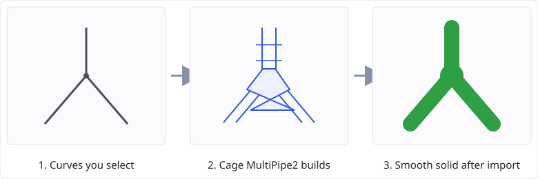
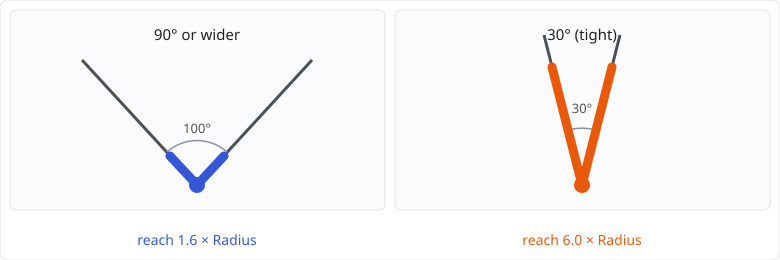
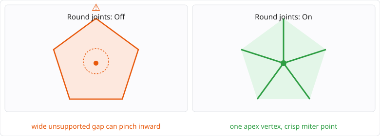

Turn a network of curves into a smooth pipe frame, inside MoI, in a single step.
This is the full reference. For a shorter, more visual overview — and how MultiPipe2
compares to Rhino's own native MultiPipe command — see the
README.
MultiPipe2 builds a coarse cage around the curves you select — square rings along every strut, and a joint at every node that bridges the rings of the struts meeting there — and lets MoI's own SubD import subdivide it into a smooth NURBS solid. Struts flow into each other through rounded joints, with no union and no fillet. You get one pipe frame per connected group of curves. Your input curves are kept, and the whole result is a single undo step.

MultiPipe2 is a MoI command: installing it is copying files. Nothing has to be downloaded or run in the background. It has its own name and its own files, so it installs beside MultiPipe (the first version) and both commands keep working.
MultiPipe2.jsMultiPipe2.htmMultiPipe2Planner.js%APPDATA%\Moi\commands\ on Windows
(e.g. ...\AppData\Roaming\Moi\commands\). On macOS it is
<MoI application support folder>/commands/.
<MoI install folder>\commands\)
works too, but a command kept in %APPDATA% survives a MoI upgrade, so it does not need
reinstalling.
MultiPipe2 on MoI's command line and press Enter.In MoI, open Options → Shortcut keys, add an entry, put the key you want in the left
column and MultiPipe2 in the right column. The same name works on a custom toolbar button.
To uninstall, delete the three files again.
One Ctrl+Z removes the whole result. The command changes none of MoI's settings: for Pipe frame it writes the cage to a temporary file in the system temp folder, imports it, and deletes the file again; a cage output writes no file at all. Your export and mesh settings are not touched.
| Option | Default | What it does |
|---|---|---|
| Output | Pipe frame | What the command leaves in your document.
Pipe frame: the smooth solid, built by MoI's SubD import from the cage. Cage curves: the cage itself, as one closed curve per cage face — the low-poly control mesh the pipe frame is subdivided from. Nothing is imported, so it is quick even on a large frame (on a 300-strut frame, a third of a second against about seventeen seconds for Pipe frame). Use it to see the cage; curves cannot be exported as a mesh, so use Cage surfaces for the edit-and-reimport round trip. Cage surfaces: the same cage as one separate surface per face — real geometry you can edit, and the output to use when you want to change the cage, connect pipes of different radii, export it and run MoI's own ImportSubD on it yourself. It is faster than Pipe frame at any size (on a 300-strut frame, under three seconds against about seventeen). Cage solid: the same cage surfaces joined into one object per pipe frame — the faceted, low-polygon counterpart of the pipe frame, closed and solid when Cap is on. Still faster than Pipe frame (on a 300-strut frame, around ten seconds against about seventeen), though the join makes it the slowest of the three cage outputs. |
| Radius | 0.5 | The strut radius, as a distance in your document units. Must be greater than zero. Struts come out
within about 1.5% of it (see Known limits).
When every selected curve is on the same MoI style, this is the only radius field and it applies to every strut. When the selection spans two or more styles, this field is replaced by one radius per style, each labelled with the style's name, so each curve builds its own thickness. See A radius per style. |
| Node size | 1.6 | How far a joint reaches along each strut before the strut proper begins, as a multiple of
Radius. Larger gives fuller, softer joints; smaller gives tighter ones. The minimum is 1.0.
It is a minimum per node: where struts meet at a tight angle the joint grows beyond it (see
Tight angles). At the default, the joints of a frame of right angles reach
exactly 1.6; a lower value only tightens nodes wider than 90°, because a right-angled node needs
about 1.6 anyway.
Where struts of different radii meet, the joint's reach is a multiple of the largest radius at that node and is shared by every strut there, so a thin strut runs straight for longer before its first ring. |
| Divisions | Auto (on) | How many times each strut is divided along its length.
Auto on: straight struts are not divided, and curved struts are divided just enough to follow the curve (the curve turns no more than 15° between one division and the next). Auto off: type a whole number N, 0 or more, and every strut gets exactly N divisions, evenly spaced. More divisions hold a strut closer to its curve and make it stiffer. A closed ring is always divided at least three times. The number field is greyed out while Auto is on. |
| Cap | On | On: every free end is closed with a rounded end, so each pipe frame is a closed solid. Off: free ends are left open (see Cap off). |
| Round joints | Off | On: every node whose joint grew for a tight angle (see Tight angles) gets one extra plain ring on each of its struts, just inboard of the joint, and its joint is offered the node's own point as an extra corner to build around, so a grown joint often comes to a controlled miter point there instead of pinching; where the geometry does not allow it the joint is left as it was. Off: joints are left as they are. |
| All nodes | Off | Greyed out unless Round joints is also on. On: every node with more than one strut gets the extra ring, and is offered the same miter-point treatment, not only the ones that grew. |
A pipe frame does not have to be one thickness. Each curve's radius comes from the MoI style it is on — the styles in the scene browser, the ones that colour your curves in the viewport.
Notes:
Where struts meet at an acute angle, a joint that reached only Node size along each strut would fold through itself. MultiPipe2 grows that node's joint automatically, just far enough to keep it clean, and uses the same reach on every strut at the node. The tighter the angle, the fuller the joint. At the default Node size of 1.6 the reach is about:

| Smallest angle between struts at the node | Joint reach, as a multiple of the largest radius at the node |
|---|---|
| 90° or wider | 1.6 (the value in the field) |
| 70.5° | 2.3 |
| 51° | 4.6 |
| 30° | 6.0 |
The summary says how many nodes grew and the largest reach, so you know why some joints are bigger.
Short struts. A strut shorter than the joints at its two ends need (a free end counts as 1 × that strut's own radius) has no room for itself: its joints overlap and the frame may intersect itself there. It is still built, and the summary counts it. Lengthen the strut, lower Radius, or lower Node size if the joint has not grown. With a radius per style, raising one curve's radius pushes the joints out at every node it touches, so a short strut at a tight angle can cross into this regime, or stop building its joint altogether, because of a curve you were not changing. No combination of radii is guaranteed to build at every node.
Two struts leaving a node in exactly the same direction cannot be joined; that is an error, and nothing is built.
Joints too tight to build. Below a few degrees between two struts, no joint can be made at all. That is not fatal to the whole selection: the pipe frames that hold such a joint are left out and every other frame is still built, and the summary says how many joints failed and how many frames were dropped. The input curves meeting those joints are renamed MultiPipe2 failed and left selected when the command finishes, so you can find them in the viewport — no coordinates to chase. Switch Output to Cage curves to see the cage the failed joint sits in. Undo puts the names back along with the geometry.
Pinched joints. Even a joint that has grown enough not to fold through itself can still pinch a little where MoI's SubD import rounds it off, if the angle is acute enough and nothing nearby holds it round. Turn on Round joints to add one extra ring just inboard of the joint at every grown node (or, with All nodes also on, at every node), which holds the SubD limit surface round there, and to offer that node's own point into its joint as an extra corner — where the geometry allows it, the joint comes to a crisp, symmetric miter point there rather than a smooth fillet or a pinch; where it does not, the joint is left as it was. Both options are off by default and remembered between runs.

With Cap off, each free end is left as a round open edge lying flat where the curve ends, at the strut's radius. The result is then an open surface, not a solid: booleans, shelling and 3D printing need Cap on. A frame with no free end (a closed polyline, a ring) is a closed solid either way. The summary says how many free ends were left open.
The look of that open edge comes from MoI's SubD import settings (its OpenBoundariesStyle);
the description above is at MoI's default.
ScaleFactorMoI's SubD import has its own user settings, and a script cannot override them. One of them,
ScaleFactor, scales everything the import brings in. If it is anything but 1 the pipe frame would
come in the wrong size.
So after the import MultiPipe2 checks the result against the cage it built: every imported object must lie inside the cage's bounding box, and together they must cover at least 80% of it on every axis. If not, the result is removed, nothing is added, and you see:
“The pipe frame came in at the wrong size or place, so it was removed. Check that MoI's SubD import ScaleFactor setting is 1.”
MoI keeps these settings in its moi.ini file, in the [SubD Import] section
(on Windows %APPDATA%\Moi\moi.ini). Close MoI first, because it writes the file when it exits;
then open the file in a text editor, set ScaleFactor=1, save, and start MoI again.
The first line always reads, for example, “1 pipe frame, 12 struts, 8 nodes, 0 free ends”. Further lines appear only when they apply:
| Line | Meaning |
|---|---|
| n cage curves for n cage faces. n cage surfaces for n cage faces. |
A cage output only: how many curves or surfaces were added, and how many faces the cage has. The two numbers match. |
| n cage solids from n cage faces. | Cage solid only: how many objects were left — one per pipe frame — and how many faces went into them. |
| n joints could not be built; n pipe frames dropped. The curves there are named MultiPipe2 failed and selected. | Those joints meet at too tight an angle. In Pipe frame each pipe frame holding one is left out and the rest are built; in a cage output nothing is dropped and the whole cage is drawn. Either way the input curves meeting a failed joint are renamed and left selected, so you can see them in the viewport and fix them. The dropped count is not shown for a cage output. |
| n duplicate segments dropped. | Your selection had curves lying on top of each other; one of each was used — the one selected first. When one of the dropped ones carried a different radius, the line says so, because the thickness there then depends on which curve you picked first. |
| Radii built: r, r, … | The distinct radii the run used. Shown only when the selection spans more than one style, so more than one radius went in. See A radius per style. |
| n crossings left unjoined; split the curves there to make a node. | Curves pass through each other mid-span. A line follows for each one: “Curves cross without sharing an end near (x, y, z); left unjoined.” |
| n nodes grew for tight angles, reaching up to r x the largest radius at the node. | See Tight angles. |
| n struts shorter than their joints; the frame may intersect itself there. | See Short struts under Tight angles. |
| Cap is off: n free ends left open, so the result is an open surface, not a solid. | See Cap off. |
| n nodes came to a miter point. | See Pinched joints under Tight angles. |
| n nodes could not and kept the usual joint. | The node's own point was not reachable there; its joint is unchanged, just as before Round joints was turned on. See Pinched joints under Tight angles. |
| Error | Cause |
|---|---|
| Select at least one curve. | No curve was picked. |
| Radius must be greater than zero. | The radius was zero or negative. |
| Radius for style must be greater than zero. | One of the per-style radius fields was zero or negative. The message names the style, so you know which row to fix. |
| The selection spans n styles; MultiPipe2 takes at most 8 in one run, one radius each. | See A radius per style. Run it on fewer styles at a time. |
| Node size must be at least 1.0. | The node size was below 1.0. |
| Divisions must be a whole number of 0 or more. | Auto is off and the number is negative or has a fraction. |
| Curve n has zero length. | That curve's ends are within tolerance of each other and it has no shape between them. |
| Curve n is not a line, polyline or smooth curve; MultiPipe2 takes those. | The curve could not be read as a strut. |
| Two curves at (x, y, z) run in the same direction. | Two struts leave that node along the same line. Remove or reshape one of them. |
| No pipe frame could be built: every one of them has a joint whose struts meet at too tight an angle. | Every pipe frame in the selection held an unbuildable joint, so there was nothing left to add. The curves at those joints are still renamed and selected. |
| The SubD import produced nothing, so nothing was added. | MoI's SubD import returned no objects. |
| The pipe frame came in at the wrong size or place, so it was removed. Check that MoI's SubD import ScaleFactor setting is 1. | See The size check. |
Tested automatically, on every change: the cage for every sample scene — closed and consistently wound, open only at free ends with Cap off, divisions per strut, rings within reach of the curves, grown nodes, short struts, duplicates, crossings and errors — and the real SubD import inside MoI, checking that each sample frame comes in as closed solids of the right number, size and place, including a pipe frame of 300 struts, the cage curves — one closed curve per face, on cages with faces of 3, 4, 6, 8 and 10 vertices, and on a joint too tight to build — and the cage surfaces, one surface per face on the same cages and on the 300-strut frame, with the construction curves gone afterwards. A frame built with a radius per curve is covered both ways: the ring widths, the node offset and the reported reach in the cage tests, and a mixed-radius scene put through the real SubD import.
Checked by hand only, so worth a careful first look: the command panel (option fields, the greyed-out Divisions field, the Output list, the per-style radius rows and their labels, prompts, the summary, Done, Back and Cancel, values remembered between runs), one Ctrl+Z removing the whole result, installing and running the command by name, and picking curves in a live document. Nothing has been run on macOS.
Nothing has to be downloaded. MultiPipe2 uses only MoI's own scripting API and the JavaScript engine that ships with MoI.
| Component | What the tool uses it for | Where it comes from | License |
|---|---|---|---|
MoI script API — moi.geometryDatabase (getSelectedObjects,
getObjects, createObjectList, fileImportSubD,
removeObjects, tolerance), curve objects (evaluatePoint,
evaluateTangent, getSubObjects, getLength,
getBoundingBox), object lists (getStandaloneCurves,
lockSelection), moi.ui (createObjectPicker,
commandDialog, commandUI, showUI, hideUI,
beginUIUpdate, endUIUpdate),
moi.filesystem (getTempDir, openFileStream,
fileExists, deleteFile), moi.command.createFactory
(polyline, planarsrf), moi.vectorMath.createPoint |
Reading the selection, the curves and the document tolerance; the object picker and the command panel; writing the cage to a temporary file, importing it as SubD, deleting the file; building the cage curves and cage surfaces; checking and removing the result. | Ships with MoI — moi3d.com | Commercial (MoI is paid software; its license covers the API) |
MoI command UI markup — moi:DistanceInput, moi:NumericInput,
moi:CheckButton, moi:Select, moi:PushButton,
moi:CommandDoneCancel, moi://ui/moi.css |
The command panel: the option fields, the Back button, the Done/Cancel buttons and MoI's own styling. | Ships with MoI — moi3d.com | Commercial (part of MoI) |
JavaScript (ECMAScript 5) built-ins — Math, Array,
Number, String, isFinite |
All the geometry of the cage (nodes, rings, joints, tubes, caps), and formatting the summary. | MoI's built-in script engine — ECMA-262 | Open standard, free to implement and use |
MoI is the only commercial component and the only thing you have to get yourself. MultiPipe2 has no third-party libraries, no package manager, no runtime downloads and no external process, and it does not use any LGPL component.
The code (MultiPipe2.js, MultiPipe2.htm,
MultiPipe2Planner.js) is released under the GNU General Public License, version
3. You may use it, study it, change it and pass it on, including changed versions, as long as those
versions travel under the same license with their source. The full text ships beside the command as
LICENSE.txt, and is at gnu.org/licenses/gpl-3.0.html.
This manual is released under Creative Commons Attribution 4.0 International (CC BY 4.0): copy it, translate it, adapt it, quote it, for any purpose, as long as you credit the source. Full text at creativecommons.org/licenses/by/4.0/.
MoI itself is separate commercial software, not distributed with MultiPipe2; you need your own copy, and nothing here grants any right to it.
This summary is not a license. Only the license texts themselves are binding — GPL v3 and CC BY 4.0.